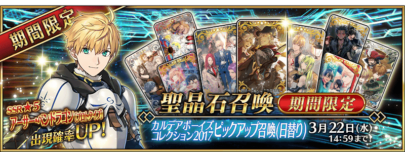
◆「迦勒底男孩收藏2017Pick Up召喚」期間◆
期間：2017年3月8日(三) 16:00～3月22日(三) 13:59
以期間限定舉辦「迦勒底男孩收藏2017Pick Up召喚」！
新登場的Servant「★5(SSR)亞瑟・潘德拉剛〔Prototype〕」以期間限定登場！
另外這次是“男孩收藏”顧名思義，只有男性Servant為召喚對象。
還有，★5(SSR)男性Servant以每日交替Pick Up！
詳情請在聖晶石召喚畫面左下的召喚詳細確認。
※亞瑟・潘德拉剛〔Prototype〕在Pick Up期間結束後，不會追加到故事召喚。
另外，有關‟男孩收藏”的概念禮裝「★5(SSR)熱砂の語らい」「★5(SSR)探偵ヱドモン～春先旅情編～」「★5(SSR)アズ・ユー・ウィッシュ」「★4(SR)カフェ・キャメロット」「★4(SR)アウトレイジ」「★4(SR)オペレーション・フィオナ」「★3(R)キャトルフィーユ」「★3(R)ネヴァーランド」「★3(R)ラ・シエスタ」也以期間限定登場！
※「★3(R)キャトルフィーユ」「★3(R)ネヴァーランド」「★3(R)ラ・シエスタ」在Pick Up期間中，也能在友情點數召喚獲得。
Pick Up期間中，期間限定Servant、Pick UpServant、期間限定概念禮裝的出現機率提升！
10次召喚中確定1張★4(SR)以上和確定1位★3(R)以上的Servant！
※確定★4(SR)以上包含Servant和概念禮裝。
※所謂「出現機率提升」意指比同稀有度的Servant及概念禮裝出現機率更高的設定。
| 每日交替Pick Up期間 | 每日交替Pick Up内容 |
|---|---|
| 3月8日(三) 16:00～ 3月10日(五) 22:59 |
亞瑟・潘德拉剛〔Prototype〕 |
| 3月10日(五) 23:00～ 3月11日(六) 22:59 |
亞瑟・潘德拉剛〔Prototype〕、諸葛孔明〔埃爾梅羅II世〕 |
| 3月11日(六) 23:00～ 3月12日(日) 22:59 |
亞瑟・潘德拉剛〔Prototype〕、弗拉德三世 |
| 3月12日(日) 23:00～ 3月13日(一) 22:59 |
亞瑟・潘德拉剛〔Prototype〕、尼古拉・特斯拉 |
| 3月13日(一) 23:00～ 3月14日(二) 22:59 |
亞瑟・潘德拉剛〔Prototype〕、阿周那 |
| 3月14日(二) 23:00～ 3月15日(三) 22:59 |
亞瑟・潘德拉剛〔Prototype〕、迦爾納 |
| 3月15日(三) 23:00～ 3月16日(四) 22:59 |
亞瑟・潘德拉剛〔Prototype〕、庫・夫林〔Alter〕 |
| 3月16日(四) 23:00～ 3月17日(五) 22:59 |
亞瑟・潘德拉剛〔Prototype〕、奧茲曼迪亞斯 |
| 3月17日(五) 23:00～ 3月18日(六) 22:59 |
亞瑟・潘德拉剛〔Prototype〕、恩奇杜 |
| 3月18日(六)) 23:00～ 3月22日(三) 13:59 |
亞瑟・潘德拉剛〔Prototype〕 |
※以每日交替變更Pick Up的Servant。
在Pick Up對象的期間以外也能入手Pick Up Servant。
※Pick Up期間中、尼古拉・特斯拉、庫・夫林〔Alter〕在各章通過前也能入手。
※請注意友情點數召喚更新時會進入資料更新。
Pick Up期間中，在管理室(ターミナル)會出現亞瑟・潘德拉剛〔Prototype〕體驗關卡！
迎接「★5(SSR)亞瑟・潘德拉剛〔Prototype〕」做為支援成員，挑戰期間限定的關卡！
別錯過體驗Servant技能與寶具的機會！
|
◆舉辦期間◆ ◆關卡通過報酬◆ ◆開放條件◆ |
 |
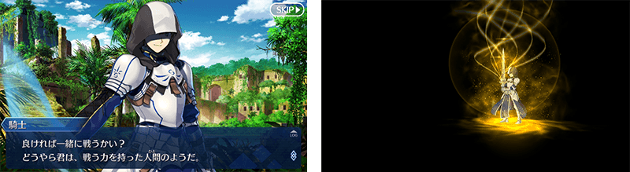

| 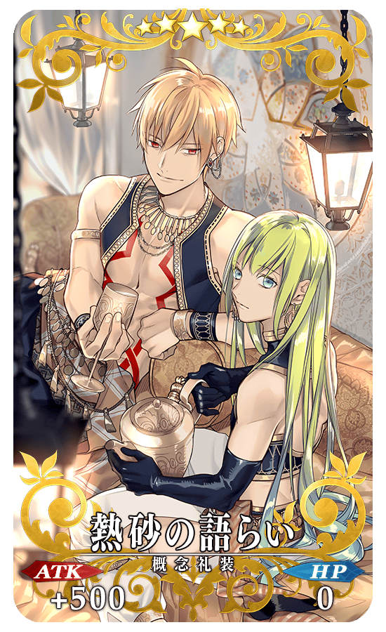 |
★★★★★SSR 熱砂の語らい ATK 500(最大:2000) HP 0 技能 自身的星星集中度提升400%＆Critical威力提升20% |
| 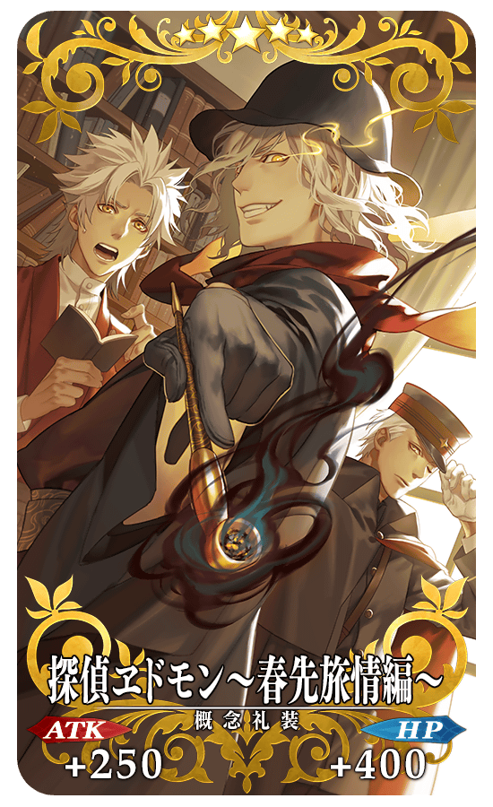 |
★★★★★SSR 探偵ヱドモン～春先旅情編～ ATK 250(最大:1000) HP 400(最大:1600) 技能 對自身賦予無敵貫通狀態＆Arts卡的性能提升8% |
| 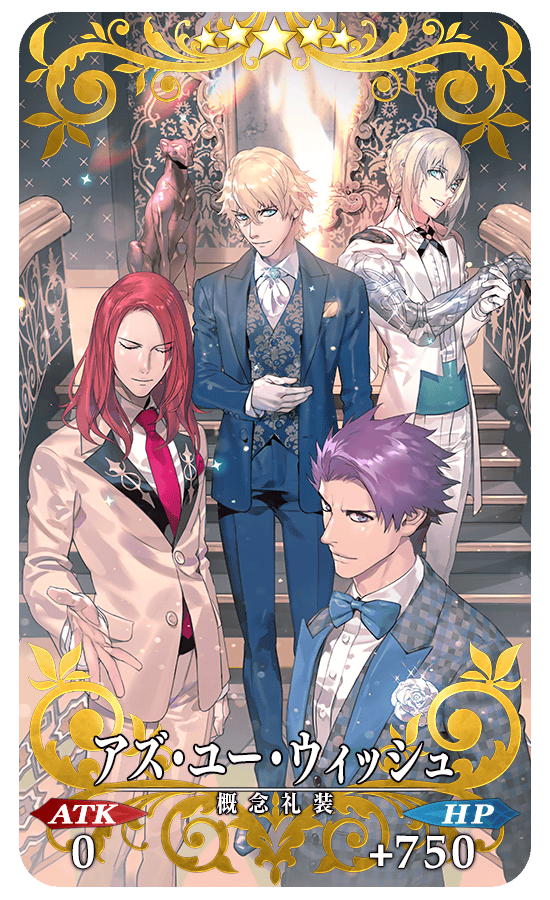 |
★★★★★SSR アズ・ユー・ウィッシュ ATK 0 HP 750(最大:3000) 技能 對自身賦予無敵狀態(1回合)＆NP獲得量提升25% |
| 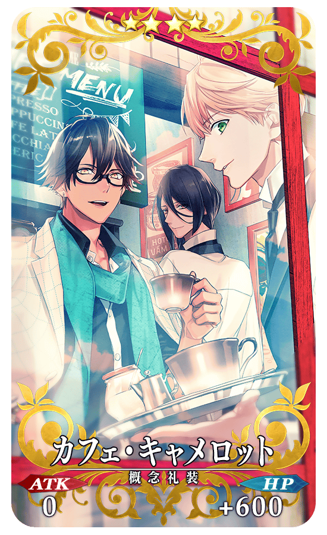 |
★★★★SR カフェ・キャメロット ATK 0 HP 600(最大:2250) 技能 自身的HP回復量提升8%＆弱體耐性提升8%＆防禦力提升8％ |
| 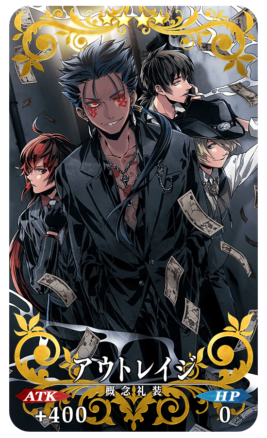 |
★★★★SR アウトレイジ ATK 400(最大:1500) HP 0 技能 對自身賦予目標集中狀態(1回合)＆NP獲得量提升15% |
| 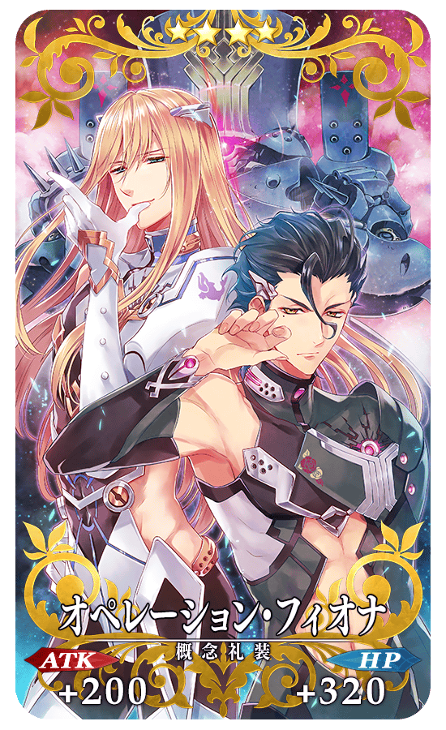 |
★★★★SR オペレーション・フィオナ ATK 200(最大:750) HP 320 (最大:1200) 技能 在自身登場時獲得星星10個(1次)＆Buster卡性能提升8% |
 |
★★★R キャトルフィーユ ATK 100(最大:500) HP 160(最大:800) 技能 自身的Quick卡的性能提升2%＆Arts卡的性能提升2%＆Buster卡的性能提升2%＆精神異常賦予成功率提升3% |
| 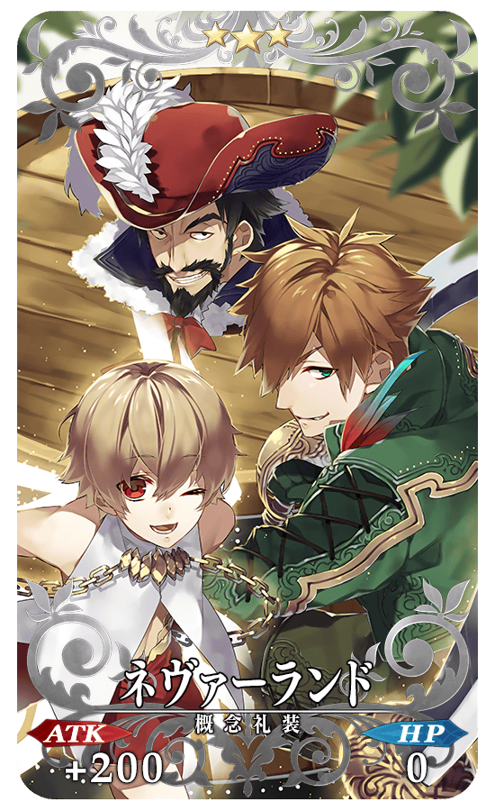 |
★★★R ネヴァーランド ATK 200(最大:1000) HP 0 技能 自身的星星發生率提升4%＆Critical威力提升4%＆寶具威力提升4% |
| 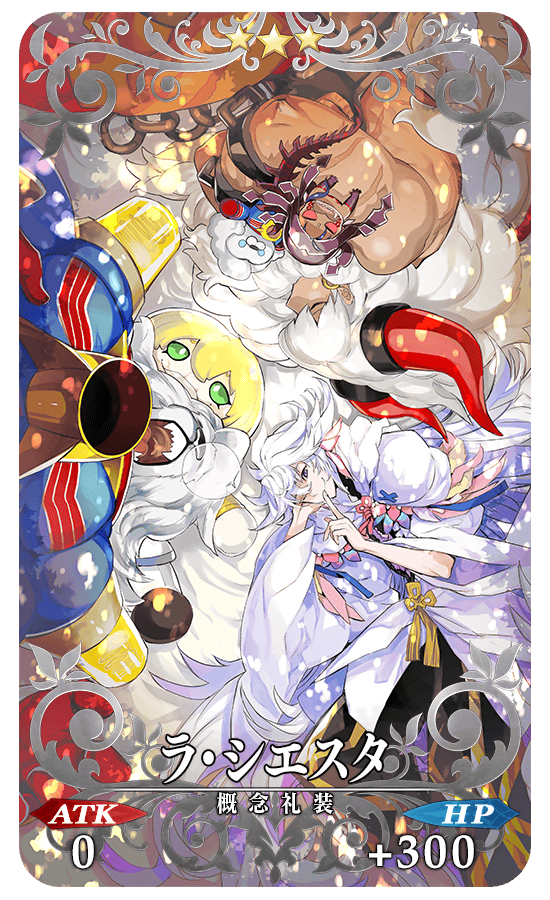 |
★★★R ラ・シエスタ ATK 0 HP300(最大:1500) 技能 對自身賦予每回合HP50回復狀態＆賦予每回合NP1%獲得狀態＆賦予每回合星星1個獲得狀態 |
為了記念「迦勒底男孩收藏2017」，舉辦能從期間限定概念禮裝中選出喜歡的1張的期間限定概念禮裝贈送宣傳活動。
詳情請從下列橫幅或此處確認。

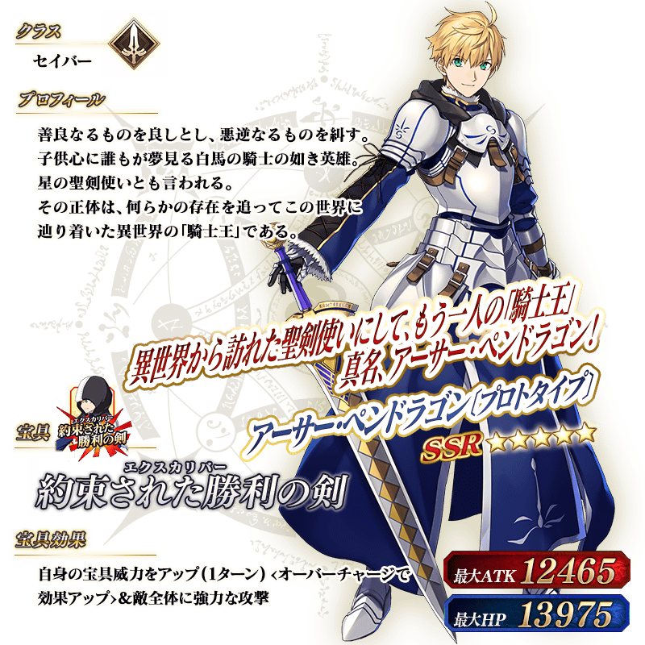
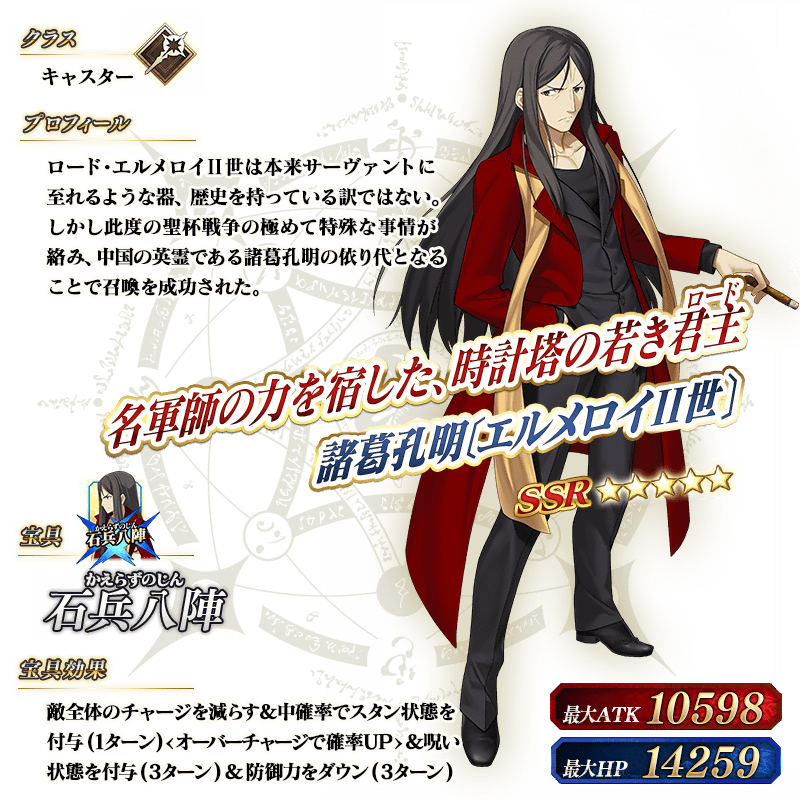

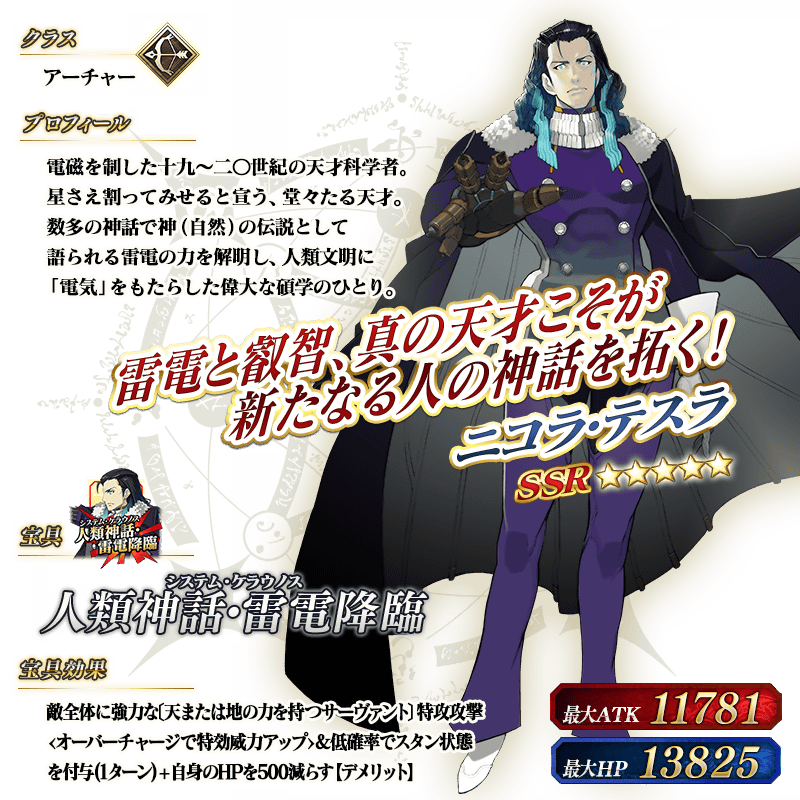


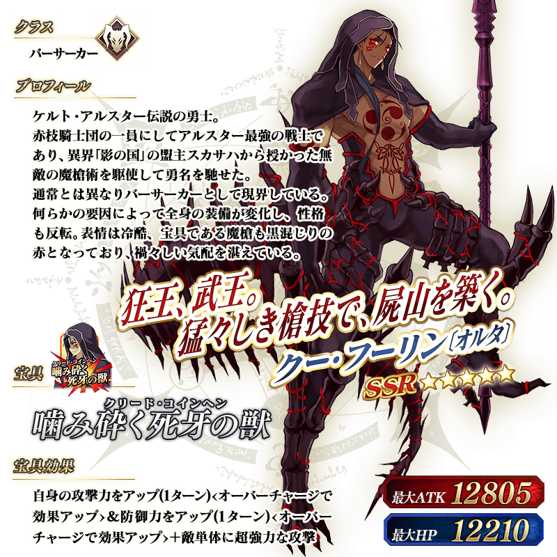

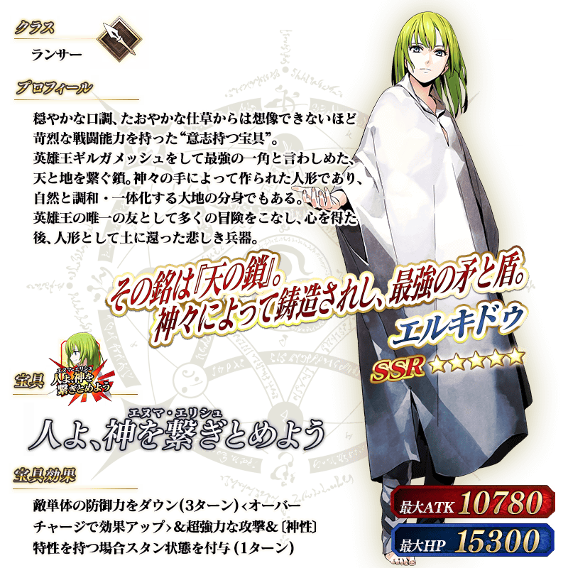